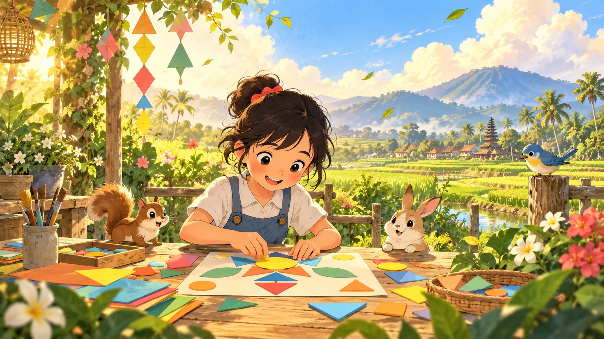

Modul Belajar Interaktif · Kelas 3
Petualangan
Petualangan
Komposisi
Belajar menata bentuk, warna, dan ruang agar karya terasa indah dan seimbang.
20 halaman · aktivitas · kuis
01 Sebelum Mulai
Misi Seniman Cilik
Kita akan menjadi penjelajah yang menemukan keseimbangan di rumah, alam, dan karya seni.
1Amati benda dan lingkungan di sekitarmu.
2Kenali tiga jenis komposisi.
3Coba menyusun bentuk dan warna.
4Ceritakan alasan karyamu terlihat menarik.
Cara memakai buku: tekan sudut halaman, tombol panah, atau geser. Jawaban latihan tersimpan otomatis di perangkat ini.
“Tidak perlu langsung sempurna. Seniman hebat tumbuh karena berani mencoba.”2